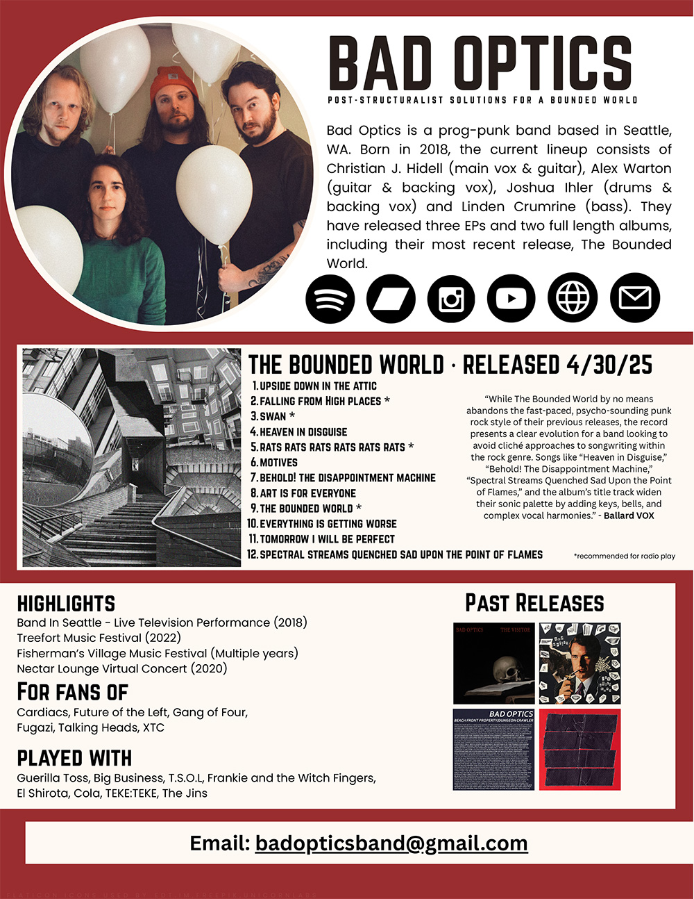

Contact
For full access to our EPK (including high-quality downloads of our singles and other press materials), as well as interview requests & booking inquires, please contact us at badopticsband@gmail.com.

For full access to our EPK (including high-quality downloads of our singles and other press materials), as well as interview requests & booking inquires, please contact us at badopticsband@gmail.com.
Bad Optics is an art punk band based in Seattle, WA. Born in 2018, the band has released 3 EPs and one full length album. They've performed in festivals such as Treefort and Fisherman's Village Music Festival, embarked on multiple West coast tours and were featured on the television program Band in Seattle early in their career. Their latest album, The Bounded World, was released on April 30th, 2025, accompanied by two-week tour run.
Bad Optics is known for high energy performances with angular and interlocking guitar melodies and manic vocals, supported by a heavy and off-kilter rhythm section that pushes and pulls in unusual time signatures. Lyrical subjects are often a mixture of social and political commentary. Since their genesis however, they have continued to evolve into an ever changing entity that showcases each member's unique and broad range of influences, making them a hard band to pigeonhole into one specific genre.
Linden Crumrine - bass
Christian J. Hidell - lead vox, guitar, synthesizers
Joshua Ihler - drums, percussion, backing vox
Alex Warton - guitar, backing vox, trumpet
{kind=link}